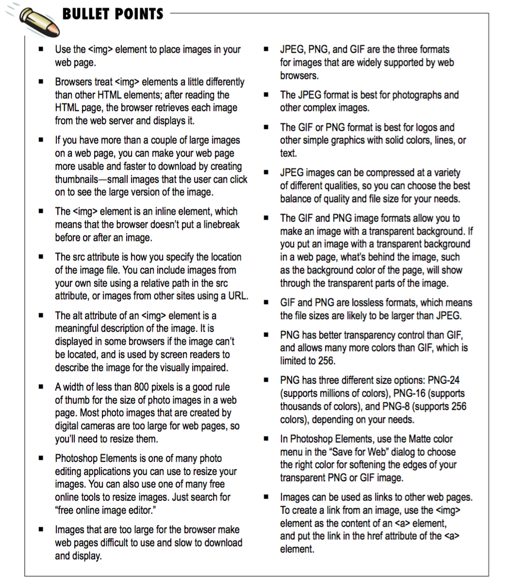

Chapter 5 - Images:
How the browser works with images:
-
When the browser sees an <img> element, the browser needs to retrieve the image from the server before it can be displayed on the page.
-
Browsers often retrieve the images concurrently. That is, the browser makes requests for multiple images at the same time. Given the speed of computers and networks, this all happens fast enough that you usually see a page display along with its images.
How images work:
3 image formats commonly used on web - gif, jpeg and png
-
JPEG - use for photos and complex graphics. It's a lossy format because to reduce the file size, it throws away some information about the image. Does not support transparency.
-
PNG or GIF - use for images with solid colours, logos and geometric shapes. Both PNG and GIF are lossless formats - they can be compressed to reduce file size but doesn't throw away anything. PNG provides 3 formats (as options for file size) - PNG-8,
PNG-24 and PNG-32.PNG can be transparent, as can GIF - but GIF only allows one colour to be set to 'transparent'
How do I choose between GIF and PNG? It seems like they are very similar?
-
PNG is the latest newcomer in graphic formats, and an interesting one because it can support both photos as well as logos. It also has more advanced transparency features than GIF. PNG is supported by all major browsers now, which wasn’t true just a few
years ago
-
To choose between GIF and PNG, there are a few things to consider. First, PNG has slightly better compression than GIF, so for an image with the same number of colors (i.e., up to 256), your PNG file may be smaller. If you need more colors than GIF can
offer, and JPEG isn’t an option (for instance, you need transparency), PNG is definitely the way to go. However, if you need animation, then you should go with GIF because GIF is the only widely supported format that supports animation.
-
More information on image formats (and the differences) on page 167.
The img element: An example:
-
<img src="image/drinks.gif">
-
src attribute - The img element is void and therefore doesn't need a closing tag.
-
A void element is an element that doesn’t have any content in the HTML page to put the opening and closing tags around. True, an image is content, but the <img> element refers to the image. The image isn’t part of the HTML page itself. Instead,
the image replaces the
 element when the browser displays the page. And remember, HTML pages are purely text, so the image could never be directly part of the page. It’s always a separate thing.
element when the browser displays the page. And remember, HTML pages are purely text, so the image could never be directly part of the page. It’s always a separate thing.
Using img element:
-
src attribute can be used for relative links within your project + you can also put a url in there (to link to another site).
-
Best practice is to use relative links for images on your own site + absolute path for images on other sites.
-
For example: <img src="http://www.bbc.co.uk/images/football.png">
Alt text:
-
Always give the visitor some indication of what information is in the image by using the alt attribute.
-
An exmaple: <img src="http://wickedlysmart.com/hfhtmlcss/trivia/pencil.png" alt="The typical new pencil can draw a line 35 miles long.">
-
The alt attribute requires a bit of text that describes the image. If the image can’t be displayed, then this text is used in its place. It’s like if you were reading the web page over the phone to someone, the alt text is what you’d say in place of the
image.
-
Alt attribute is also useful for vision-impaired users who are using a screen reader to read the page - the screen reader will read the alt text to the user, which helps them understand the page better.
Sizing up your images:
-
Always add width and height attributes to your image. This tells the browser up front the size of the image in your page.
-
<img src="images/drinks.gif" width="48" height="100">
-
Width and height are specified using number of pixels.
-
On many browsers, if you supply the width and height in your HTML, then the browser can get a head start laying out the page before displaying it. If you don’t, the browser often has to readjust the page layout after it knows the size of an image. Remember,
the browser downloads images after it downloads the HTML file and begins to display the page. The browser can’t know the size of the images before it downloads them unless you tell it.
-
We’ve said many times that we are supposed to use HTML for structure, and not for presentation. These feel like presentation attributes. Am I wrong? Well, it depends on how you are using these attributes. If you’re setting the image width and height to
the correct dimensions, then it is really just informational. However, if you are using the width and height to resize the image in the browser, then you are using these attributes for presentation. In that case, it’s probably better to consider
using CSS to achieve the same result.
-
A good rule of thumb is 96 pixels to every inch (on the screen)
An image is an inline element
-
<img> is displayed as an inline element + so doesn't cause linebreaks to be inserted before or after the element is displayed
-
So if there are several images together in the HTML, the browser will fit them side by side if the browser window is wide enough.
-
Relating to page 195, the reason the larger photos weren’t side by side is because the browser didn’t have room to display them next to each other. Instead, it displayed them on top of each other. A browser always displays vertical space before and after
a block element, and if you look back at the screenshots, you’ll see the images are right on top of each other with no space in between. That’s another sign <img> is an inline element.
How to link to something else when you click on an image:
-
To link an image, you put the <img> element inside an element, like below...
-
<a href="html/seattle_downtown.html"><img src="thumbnails/seattle_downtown.jpg" alt="An iPod in downtown Seattle, WA"></a>
Chapter summary
